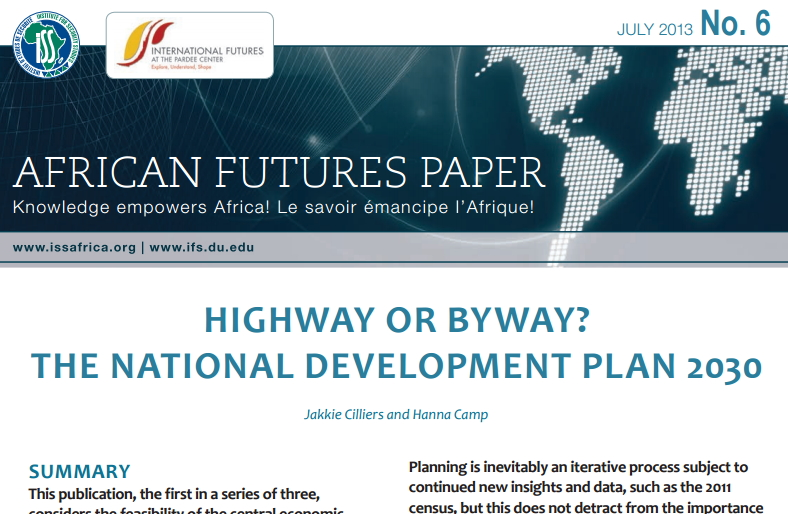
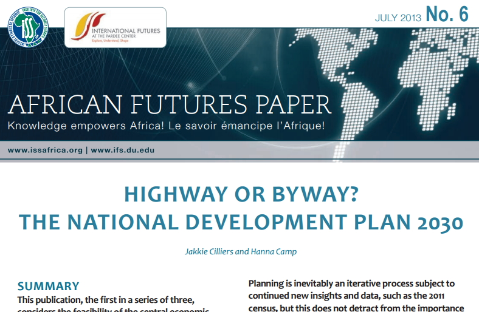

PORTFOLIO


FOOD SECURITY PROJECTS
I'm an international affairs junkie, and a professional on the side. In 5 years in the field I've worked on a variety of topics related to global development, including global trends analysis, data management, and capacity building for international organizations. I currently work for aWhere, Inc. implementing weather and agronomic data solutions for global agriculture development projects. In my spare time I think about food security..
Global Finance, Trade, and Economic Integration
Josef Korbel School of International Studies, University of Denver
University of California, San Diego
aWhere, Inc.
Institute for Security Studies
Pardee Center for International Futures
R
HTML/CSS
Excel
InDesign
Spanish
Arabic

FOOD SECURITY PROJECTS
Created by HLC